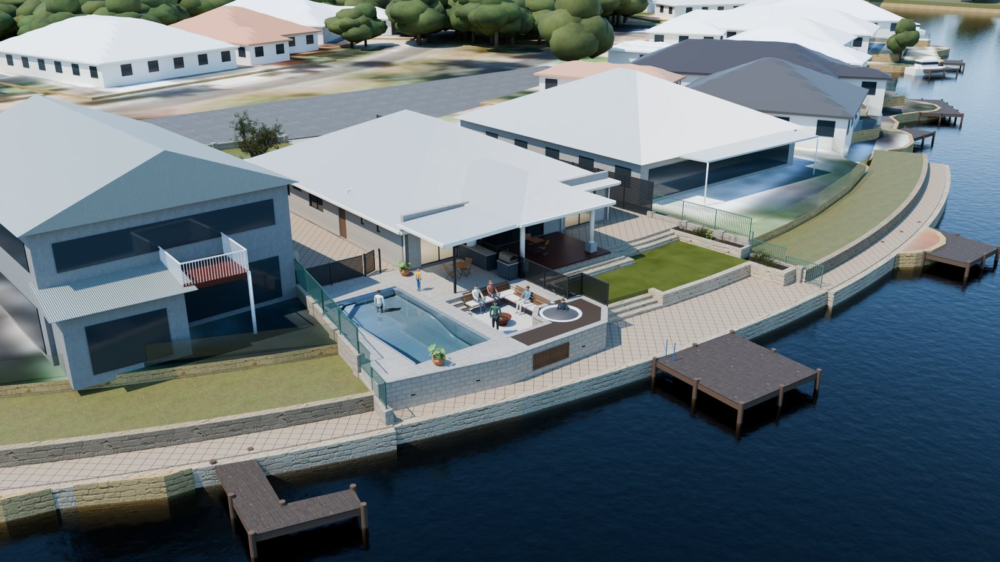

Pool, spa and alfresco model
The backyard as it is today, and with Bob Bruce's SK02 pool, spa, sunken lounge and alfresco built in. Levels come from the Denada feature survey, the design from SK02, finishes from Naturaliste's estimate QU-597.
Updated 13 Oct: people for scale, a fire pit, reclined bench backs, a raised planter by the spa deck, a gate in the east fence, pool roller and outdoor kitchen options, the lounge through the day, lighting after dark, and the far bank rebuilt from aerial photos.
- Survey
- Denada 25475, 20 Jul 2026
- Design
- Bob Bruce SK02, 30 Jul 2026
- Finishes
- Estimate QU-597, 7 Oct 2026
- Sun
- 16 Jan, 2:45 pm AWST
Drag across the picture to wipe between today and the proposed design. Pick another viewpoint below.
Pool roller and outdoor kitchen
The main views above show the first option of each. Switch between them here.
Where the pool roller goes
A stand-mounted roller sized for this pool: 4.6 m long, the blanket rolls up to about 0.42 m across, and the stands sit about 0.8 m tall.
BBQ and pizza oven
Along the alfresco's east fence, between the house wall and the lounge. Charcoal cabinets 900 mm high with a pale concrete top, a 900 mm built-in BBQ and a dome oven about 0.73 m wide.
The lounge through the day
The same three views at different times, with the sun calculated for Geographe. After sunset the lighting is switched on.
Time of day
After dark
Mid-January, twenty minutes after sunset, with every light on. Warm white (about 2700 K) everywhere except the pool and spa. The lounge itself is in the day series above at 7:40 pm and 9:00 pm.
- LED strip tucked under the front of every bench seat, washing the lounge floor
- LED strip under each step nosing, down into the lounge and up to the spa deck
- Gas fire pit in a corten bowl, about 0.94 m across
- Five flush marker lights in the concourse between the pool and the lounge
- Small brick lights in the new limestone wall, facing the canal path
- Four uplights washing the west boundary wall beside the pool
- One light in the pool and one in the spa, and downlights in the skillion
Pool fence: perforated or glass
The 7 Oct estimate prices charcoal perforated aluminium, 1.2 m high with two gates. SK02 and the scope notes still say frameless glass, which the 21 Sep estimate had at about $630 more.
From the lawn and the pavilion, glass keeps the pool and spa in view. Perforated panels read as a dark screen with the shapes behind just showing through.

Where the sun lands
Plan view of the proposed design, north up, with shadows from the house, the neighbours, the new skillion and the fences. The sun position is calculated for Geographe at each time. The neighbour's house is a simplified shape, so treat the late-afternoon shade edge as approximate.
How accurate it is
| Part | From | Accuracy |
|---|---|---|
| Boundaries, walls, steps, paving, jetty, canal wall, levels | Denada survey DWG, 3D lines and spot heights | A few cm |
| Pool, spa, lounge, deck, new walls, fence, skillion outline | SK02, lined up on the survey using the 99 survey points still in Bob's drawing | 0 mm offset, as good as SK02 |
| House walls, doors, eaves, roof | Plunkett Homes plans, 2005 | Within 2 cm of the surveyed pavilion piers |
| Boundary walls and fences, planters | Survey wall tops plus the Dec 2025 LiDAR scan | Scan fits the survey to 4 cm |
| Neighbours | Drone photo matched to the survey, simple shapes | Placed to about 0.3 m |
| The canal, the far bank and the houses around it | Overture building outlines lined up on the Landgate cadastre, the canal edge traced from 2025 aerial imagery, colours and roof types from your photos | Outlines to about 0.5 m, heights estimated from storeys |
Assumed where the documents are silent
- Bob's RL 0.00 is taken as AHD 2.37, the current rear paving. No drawing states the conversion.
- The spa rim sits flush with the deck, as Mike asked Bob on 30 Jul. The estimate's wording (a −1100 platform versus a solid deck) still conflicts.
- The shallow end is at the north, by the alfresco. The corner steps go on the bench side, along the boundary.
- The pool fence is charcoal perforated aluminium, per the 7 Oct estimate. SK02 and the scope notes still say glass.
- The skillion matches the existing roof's pale grey and has a flat white ceiling. The concept renders showed charcoal.
- Finishes: light exposed aggregate, Mondo Grey Sparkle shell, warm composite decking, cream limestone facebrick, white crushed limestone in the lounge.
- The only new planting is a raised planter in the lawn corner beside the spa deck: limestone to match the walls, 450 mm high and about 1 m wide, with low grasses and shrubs. There's no planting plan yet.
- The east fence gate sits where SK02 has it, beside the pavilion column. The "one long bench" kitchen moves it about 1 m south.
- Bench backs lean back about 20° with a deeper seat (900 mm overall) and cushions. SK02 doesn't detail them.
- The figures are 1.73 m adults and a 1.2 m child, so you can judge the sizes.